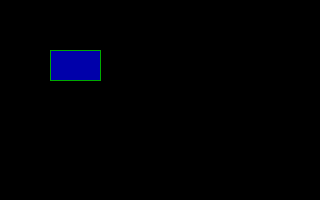

Help Center›FreeBASIC
Drawkeyword
Statement for sequenced pixel plotting
Syntax
Draw [target,] cmdParameters
| Name | Description | |
|---|---|---|
target | the buffer to draw on | |
cmd | a string containing the sequence of commands |
Description
Drawing will take place onto the current work page set via
ScreenSet or onto the target Get/Put buffer if specified.The
Draw statement can be used to issue several drawing commands all at once; it is useful to quickly draw figures. The command string accepts the following commands:Commands to plot pixels:
| Command | Description |
| Commands to plot pixels: | |
| B | Optional prefix: move but do not draw. |
| N | Optional prefix: draw but do not move. |
| M x,y | Move to specified screen location. if a '+' or '-' sign precedes x, movement is relative to current cursor position. x's sign has no effect on the sign of y. |
| U [n] | Move n units up. If n is omitted, 1 is assumed. |
| D [n] | Move n units down. If n is omitted, 1 is assumed. |
| L [n] | Move n units left. If n is omitted, 1 is assumed. |
| R [n] | Move n units right. If n is omitted, 1 is assumed. |
| E [n] | Move n units up and right. If n is omitted, 1 is assumed. |
| F [n] | Move n units down and right. If n is omitted, 1 is assumed. |
| G [n] | Move n units down and left. If n is omitted, 1 is assumed. |
| H [n] | Move n units up and left. If n is omitted, 1 is assumed. |
| Commands to color: | |
| C n | Changes current foreground color to n. |
| P p,b | PAINTs (flood fills) region of border color b with color p. |
| Commands to scale and rotate: | |
| S n | Sets the current unit length, default is 4. A unit length of 4 is equal to 1 pixel. |
| A n | Rotate n*90 degrees (n ranges 0-3). |
| TA n | Rotate n degrees (n ranges 0-359). |
| Extra commands: | |
| X p | Executes commands at p, where p is a STRING PTR. |
Commands to set the color, size and angle will take affect all subsequent
Draw operations.Draw respects the current clipping region as set by the View (Graphics) statement, but its coordinates are not affected by the custom coordinates system.Remarks
Differences from QB
-
targetis new to FreeBASIC
- QB used the special pointer keyword VARPTR$ with the
X pcommand.
- FB does not currently allow sub-pixel movements: all movements are rounded to the nearest integer coordinate.
See also
Example
Screen 13
'Move to (50,50) without drawing
Draw "BM 50,50"
'Set drawing color to 2 (green)
Draw "C2"
'Draw a box
Draw "R50 D30 L50 U30"
'Move inside the box
Draw "BM +1,1"
'Flood fill with color 1 (blue) up to border color 2
Draw "P 1,2"
Sleep

'' Draws a flower on-screen
Dim As Integer i, a, c
Dim As String fill, setangle
'' pattern for each petal
Dim As Const String petal = _
_
("X" & VarPtr(setangle)) _ '' link to angle-setting string
_
& "C15" _ '' set outline color (white)
& "M+100,+10" _ '' draw outline
"M +15,-10" _
"M -15,-10" _
"M-100,+10" _
_
& "BM+100,0" _ '' move inside petal
& ("X" & VarPtr(fill)) _ '' flood-fill petal (by linking to fill string)
& "BM-100,0" '' move back out
'' set screen
ScreenRes 320, 240, 8
'' move to center
Draw "BM 160, 120"
'' set initial angle and color number
a = 0: c = 32
For i = 1 To 24
'' make angle-setting and filling command strings
setangle = "TA" & a
fill = "P" & c & ",15"
'' draw the petal pattern, which links to angle-setting and filling strings
Draw petal
'' short delay
Sleep 100
'' increment angle and color number
a += 15: c += 1
Next i
Sleep
Reference
- Documented in KeyPgDraw.html